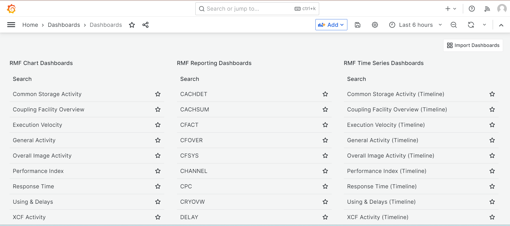
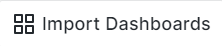

RMF master dashboard
IBM® RMF for z/OS Grafana is a plugin provides custom panels for the RMF data source and master dashboard that consists of RMF Charts, RMF Reporting, and RMF Time Series dashboards.
Grafana provides a highly flexible and customizable dashboard consisting of one or more rows and panels. You can use various pre-configured panels to construct queries and tailor the visualization to meet your requirements. This enables you to create a personalized dashboard that seamlessly interacts with data from a configured Distributed Data Server (DDS). For more information about creating and managing dashboards, refer to the Grafana documentation.
| RMF Charts Dashboard | RMF Reporting Dashboards | RMF Time Series Dashboards | |||
|---|---|---|---|---|---|
| Common Storage Activity | CACHDET | DSND | PROC | SYSINFO | Common Storage Activity (Timeline) |
| Coupling Facility Overview | CACHSUM | EADM | PROCU | SYSRG | Coupling Facility Overview (Timeline) |
| Execution Velocity | CFACT | ENCLAVE | SPACED | SYSSUM | Execution Velocity (Timeline) |
| General Activity | CFOVER | ENQ | SPACEG | USAGE | General Activity (Timeline) |
| Overall Image Activity | CFSYS | HSM | STOR | XCFGROUP | Overall Image Activity (Timeline) |
| Performance Index | CHANNEL | IOQ | STORC | XCFOVW | Performance Index (Timeline) |
| Response Time | CPC | JES | STORCR | XCFPATH | Response Time |
| Using & Delays | CRYOVW | LOCKSP | STORF | XCFSYS | Using & Delays (Timeline) |
| XCF Activity | DELAY | LOCKSU | STORM | ZFSFS | XCF Activity (Timeline) |
| Common Storage Activity | DEV | OPD | STORR | ZFSKN | Common Storage Activity (Timeline) |
| DEVR | PCIE | STORS | ZFSOVW | ||
The dashboard interface offers several customization options for data presentation. The following is the image of the master dashboard from the IBM RMF for z/OS Grafana plugin:

You can click the  option when there is a new version of the plugin, and then re-import the dashboard by clicking the icon. Similarly, if any of the dashboards is no longer required, you can click the icon to remove it from the master dashboard.
For more information about available features in the Dashboard and their descriptions, refer to the Grafana documentation.